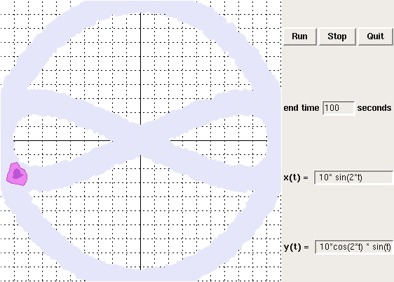
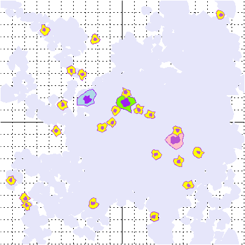

AmoebaWorld
AmoebaWorld is used in Introductory Programming to provide practice writing Python expressions and to introduce object-oriented programming. Here is the first homework that uses AmeobaWorld. Students write Python expressions that evaluate parametric equations. The Amoeba traces the resulting curves. Here is an example showing the "slide", an Amoeba, and the control panel where students type expressions.(This is just a screenshot, so don't bother pressing buttons!)

In a later homework, students write functions that allow the Amoebas to move toward each other, detect collisions, mate, and produce baby Amoebas.
Here is what a solution might look like after 200 steps:

In this case there is no control panel, since the students are writing a program to control the Amoebas, rather than using the GUI. Here is some of the code from the solution:
def main(n=200):
world = AmoebaWorld()
# make the Amoebas
amy = make_amoeba(world, 'amy', 'pink')
bob = make_amoeba(world, 'bob', 'light blue')
pat = make_amoeba(world, 'pat', 'chartreuse')
amy.crush = bob
bob.crush = pat
pat.crush = amy
# run the loop n times
for i in range(n):
# move the amoebas
for amoeba in world.animals:
move(amoeba)
nudge(amoeba, amoeba.crush)
check_collisions(amoeba, world)
# update the world and wait 0.1 seconds
world.update()
time.sleep(0.1)
# wait for the user to close the window
world.mainloop()
# after all the function definitions, call main
main()
This example uses some object-oriented features, but it is mostly written in a procedural style. Introductory Programming focuses on basic programming skills and defers object-oriented design until Software Design.